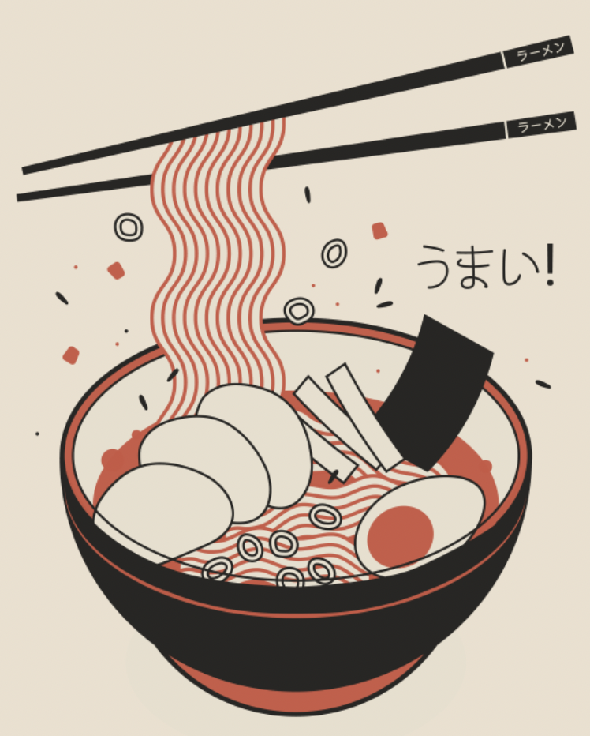

ラーメン
〰️〰️〰️
A BOWL OF LOVE FROM JAPANESE CUISINE FOR YOU
Ramen is a traditional Japanese noodle soup. It consists of Chinese wheat noodles served in meat or fish-based broth & uses toppings such as sliced pork, nori menma, and scallions.
Order Now
